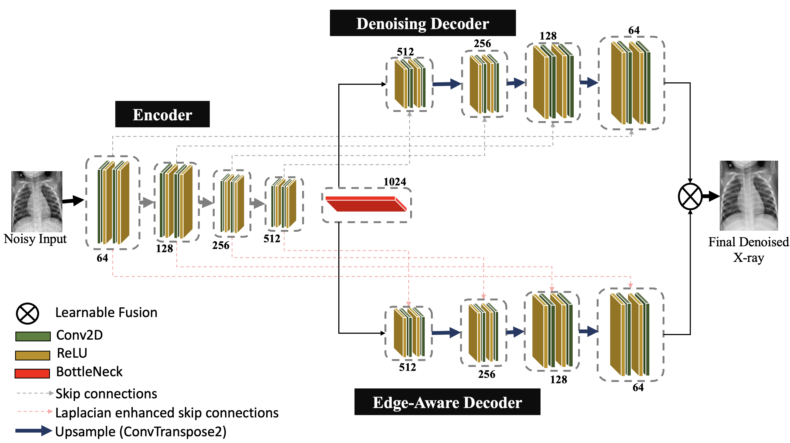

1Federal University of Agriculture Abeokuta, Nigeria 2University of Lagos, Nigeria 3University of Nigeria, Nigeria 4University of Benin, Nigeria 5Olabisi Onabanjo University, Nigeria 6Federal University of Technology, Nigeria 7McGill University, Canada 8AGH University of Krakow, Poland
MIRASOL @ MICCAI 2025
Pediatric chest X-ray imaging is essential for early diagnosis, particularly in low-resource settings where advanced imaging modalities are often inaccessible. Low-dose protocols reduce radiation exposure in children but introduce substantial noise that can obscure critical anatomical details. Conventional denoising methods often degrade fine details, compromising diagnostic accuracy.
In this paper, we present SharpXR, a structure-aware dual-decoder U-Net designed to denoise low-dose pediatric X-rays while preserving diagnostically relevant features. SharpXR combines a Laplacian-guided edge-preserving decoder with a learnable fusion module that adaptively balances noise suppression and structural detail retention. To address the scarcity of paired training data, we simulate realistic Poisson-Gaussian noise on the Pediatric Pneumonia Chest X-ray dataset.
SharpXR outperforms state-of-the-art baselines across all evaluation metrics while maintaining computational efficiency suitable for resource-constrained settings. SharpXR-denoised images improved downstream pneumonia classification accuracy from 88.8% to 92.5%, underscoring its diagnostic value in low-resource pediatric care.
A shared encoder feeds a denoising decoder and an edge-aware decoder, one for smooth reconstruction and one for sharp anatomy.
Laplacian-enhanced skip connections amplify anatomical boundaries so ribs and lung contours survive denoising.
A fusion module adaptively blends both decoders, balancing noise suppression against structural detail.

images/architecture.png (Figure 1 from the paper)Paired low-dose and standard-dose pediatric chest X-rays are not publicly available, so we add Poisson-Gaussian noise to clean images from the Pediatric Pneumonia Chest X-ray dataset. The Poisson rate η ranges over [50, 300] and the Gaussian standard deviation σ over [5, 30]. The dataset has 5,856 images of children aged 1–5 years.
Images are resized to 256×256 and split 75/10/15 into 4,391 training, 586 validation and 879 test images. We train with an RMSE loss and Adam (learning rate 1e-4), batch size 4, for up to 50 epochs on a single NVIDIA T4 GPU.
SharpXR achieves the best performance across all metrics on the test set.
| Model | RMSE | PSNR | SSIM | SNR |
|---|---|---|---|---|
| Attention U-Net | 0.0193 ± 0.001 | 34.44 ± 0.12 | 0.8876 ± 0.004 | 28.76 ± 0.15 |
| Sharp U-Net | 0.0172 ± 0.001 | 35.40 ± 0.11 | 0.9261 ± 0.002 | 29.72 ± 0.14 |
| HFormer | 0.0271 ± 0.002 | 31.46 ± 0.21 | 0.8464 ± 0.005 | 25.78 ± 0.24 |
| ResUNet++ | 0.0317 ± 0.003 | 31.89 ± 0.20 | 0.8569 ± 0.004 | 26.17 ± 0.23 |
| REDCNN | 0.0181 ± 0.001 | 34.95 ± 0.13 | 0.9140 ± 0.003 | 29.20 ± 0.16 |
| DnCNN | 0.0203 ± 0.001 | 33.97 ± 0.14 | 0.8945 ± 0.003 | 28.29 ± 0.18 |
| BM3D | 0.0346 ± 0.003 | 29.45 ± 0.25 | 0.7003 ± 0.006 | 22.85 ± 0.30 |
| SharpXR (ours) | 0.0170 ± 0.001 | 35.52 ± 0.12 | 0.9263 ± 0.002 | 29.84 ± 0.13 |
SharpXR outperforms all baselines in PSNR at every noise setting, showing robustness to both low photon counts and strong electronic noise.
| σ | η | Attention U-Net | DnCNN | HFormer | REDCNN | ResUNet++ | Sharp U-Net | SharpXR |
|---|---|---|---|---|---|---|---|---|
| 5 | 300 | 36.367 | 36.166 | 33.151 | 37.218 | 33.777 | 37.760 | 37.819 |
| 10 | 200 | 35.092 | 34.915 | 32.295 | 35.856 | 32.696 | 36.475 | 36.583 |
| 15 | 150 | 33.981 | 33.812 | 31.476 | 34.736 | 31.826 | 35.445 | 35.569 |
| 20 | 100 | 32.897 | 32.726 | 30.648 | 33.698 | 30.803 | 34.491 | 34.641 |
| 25 | 50 | 31.517 | 31.163 | 29.535 | 32.385 | 29.357 | 33.332 | 33.514 |
| 30 | 100 | 31.428 | 31.125 | 29.522 | 32.405 | 29.378 | 33.343 | 33.534 |
SSIM results for the same noise levels are in Table 3 of the paper.
To test clinical utility, we train identical classifiers on noisy, SharpXR-denoised and clean X-rays. Denoising with SharpXR raises accuracy from 88.8% to 92.5%, close to the 93.7% achieved on clean images.
The dual decoder alone improves over the single-decoder baseline. Adding Laplacian filtering without fusion slightly reduces SSIM, suggesting over-sharpening. The full model, with learnable fusion, performs best.
| Model variant | RMSE | PSNR | SSIM | SNR |
|---|---|---|---|---|
| Single decoder | 0.0175 | 35.23 | 0.9257 | 29.52 |
| Dual decoder only | 0.0173 | 35.43 | 0.9257 | 29.64 |
| Dual decoder + Laplacian (no fusion) | 0.0175 | 35.28 | 0.9212 | 29.56 |
| SharpXR (full) | 0.0170 | 35.52 | 0.9263 | 29.84 |
SharpXR shows strong denoising performance across metrics and noise levels. The dual decoder with learnable fusion maintains diagnostic structures while suppressing noise, which makes it promising for real-world pediatric imaging, especially in low-dose and low-resource contexts. Below we discuss limitations.
@inproceedings{abolade2026sharpxr,
title = {SharpXR: Structure-Aware Denoising for Pediatric Chest X-Rays},
author = {Abolade, Ilerioluwakiiye and others},
booktitle = {Medical Image Computing in Resource Constrained Settings},
series = {Lecture Notes in Computer Science},
volume = {16398},
year = {2026},
publisher = {Springer},
address = {Cham},
doi = {10.1007/978-3-032-13654-1_9}
}
We thank the ML Collective community for their generous compute resources and weekly feedback, and AFRICAI for their mentorship. This work was partly supported by the Italian Ministry of University and Research (MUR) under project PE0000013 – Future of Artificial Intelligence Research (FAIR).